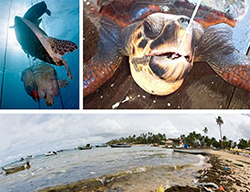
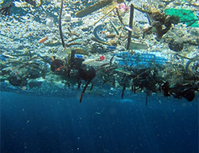
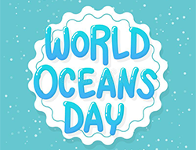

Saiba de que forma a preservação dos oceanos é importante para a saúde do planeta!
Os oceanos estão entre os ecossistemas mais ricos, diversos e importantes para o planeta. Apesar de chamar-se Terra, conhecidamente vivemos em um mundo onde a maior parte é composta de água.
Cobrindo 71% da superfície do nosso planeta, estima-se que os oceanos possuem 360 milhões de quilômetros quadrados e comportam 1,3 bilhão de quilômetros cúbicos de água.
Ainda sim, para entendermos melhor o tamanho e magnitude desse gigantesco ecossistema, podemos dizer que os oceanos têm tamanho equivalente a uma área correspondente a 36 Estados Unidos, por exemplo.
Dada às suas dimensões, fica mais fácil compreendermos porque é tão importante a conscientização acerca da preservação dos oceanos.

Mas você sabe o que é Extinção?
Você, com certeza, já deve ter ouvido falar sobre esse assunto!
Dizemos que ocorreu uma extinção quando um determinado organismo não está mais presente em um ambiente. A extinção pode ser local ou global. Chamamos de local quando ela ocorre apenas em uma determinada região. Já a extinção global é aquela em que o organismo não é encontrado em todo o planeta. As extinções locais podem ser reversíveis, ou seja, é possível reintroduzir a espécie, por exemplo. Já as extinções globais não podem ser revertidas.
A extinção é, sem dúvida, importantíssima para o processo de evolução. Imagine que a extinção dos dinossauros no Período Cretáceo nunca tivesse ocorrido. Será que os mamíferos teriam se desenvolvido de tal maneira?

Como afetamos a Vida Marinha?
Segundo dados recentes da Organização das Nações Unidas, todo ano, mais de 8 milhões de toneladas de plástico têm como destino os oceanos. É como se, a cada minuto, um caminhão de lixo cheio de plástico despejasse toda a sua carga no mar. Se continuarmos nesse ritmo de produção e descarte exacerbado de plástico e de outros resíduos sólidos, é provável que, em 2050, haja mais lixo do que peixes nos oceanos. Os principais responsáveis por esse cenário de descaso com o meio ambiente são os hábitos culturais de consumo presentes na sociedade há tanto tempo, que, em contrapartida, continuam sendo os agentes de mudança mais potentes contra o aumento de índices alarmantes sobre a poluição dos oceanos.
A pesca ilegal que é uma atividade não declarada e não regulamentada sendo responsável por: empobrecer as unidades populacionais, destruir os habitats marinhos, distorcer a concorrência, colocar os pescadores honestos numa situação de desvantagem e enfraquecer as comunidades costeiras, em especial nos países em desenvolvimento.
O aumento das emissões de Gases do Efeito Estufa (GEE) é outro fator que impacta diretamente nos mares e oceanos, pois pode causar a acidificação (aumento do gás carbônico atmosférico, que se dissolve na água, alterando o seu equilíbrio químico), menor concentração de oxigênio na água e deixam os oceanos mais quentes.

Por que preservar a Vida Marinha?
Os oceanos (e sua vida marinha) fornecem aos seres vivos mais da metade do oxigênio que respiramos, exercendo, assim, um papel de extrema importância no ciclo da água e no sistema climático. Além disso, eles garantem a alimentação de milhões de pessoas e animais, bem como garantem o sustento de boa parte da população da zona costeira.
Por esses motivos, os oceanos têm grande importância ecológica, econômica e sociocultural, sendo considerado o mais rico ecossistema do planeta.
Já estamos preservando a vida marinha?
Sim. Foram criados santuário, parque, monumento e área de reserva, com o intuito de criar um espaço de proteção não só para a biodiversidade marinha, mas sim para todos os seres humanos, porque sabemos a importância que eles possuem na vida terrestre.
Oceanos: a cada dia mais explorados
O oceano é o lar de quase 95% dos seres vivos, por isso, entender melhor a biodiversidade marinha é importante para a conscientização ambiental e preservação do equilíbrio do planeta. E nunca foi tão importante olhar para este ecossistema como agora.